在李仲燮公園吃完免費滋味午餐, 還接受了韓國某電視台的採訪, 心情十分暢快, 看見時間尚早, 今天在西歸浦的行程也不多, 便繼續在公園內閒逛。
公園的另一邊不斷有歌聲傳來, 便走去看看。原來有一位年輕女歌手在演唱一些傳統的韓國歌曲。
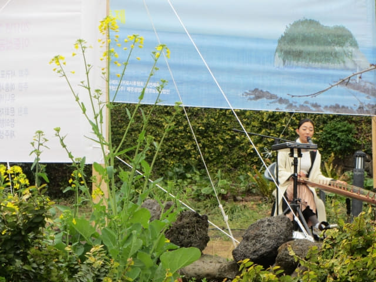
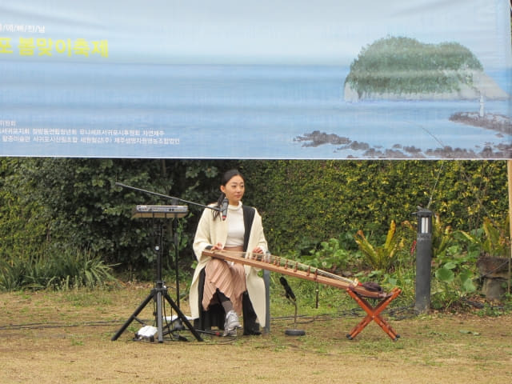
接著是新一派的歌手, 演唱一些歐西懷舊金曲, 頓時吸引一大群觀眾, 當唱到 Tina Turner 的名曲 Rolling on the river 時, 觀眾頓時高漲起來, 齊齊拍掌, 載歌載舞。 而每當唱到以下大家最熟悉的一段時:
And we’re rolling, rolling
Rolling on the river
更一起大聲地唱, 場面十分熱鬧。
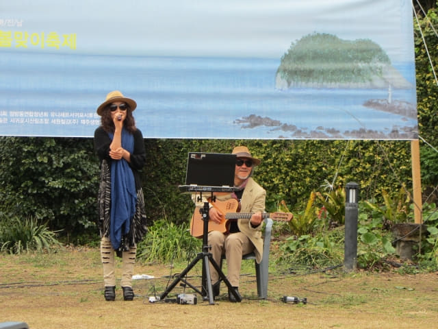
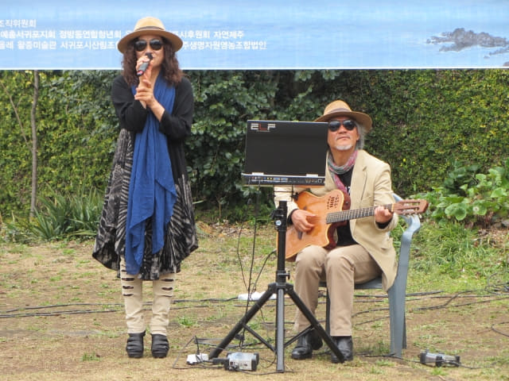
聽了幾首熟悉金曲, 跳了一會舞, 心情十分高漲, 無奈下午還有行程, 便循原路離開李仲燮公園, 往西歸浦下一個目的地 – 天地淵瀑布。
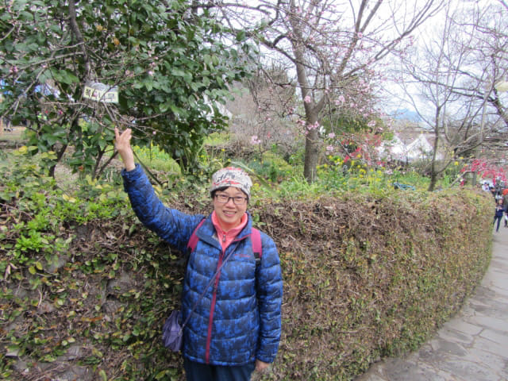
沿李仲燮路往下走。沿途路旁有很多藝術品擺設, 令這裡充滿文化氣息。
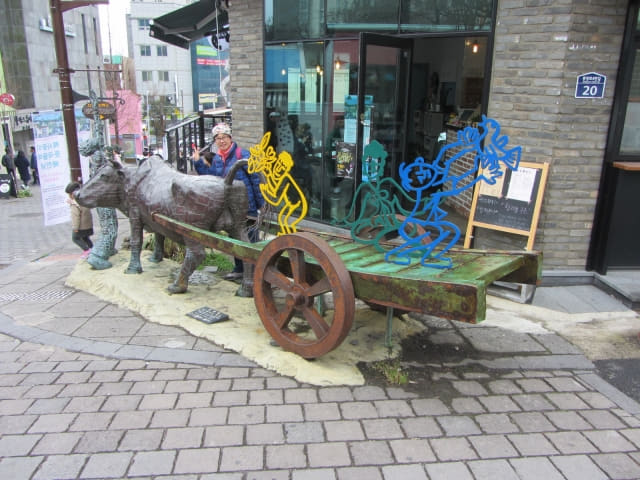
不一會便來到李仲燮路山下出入口的牌樓。牌樓充滿濟州島的色彩, 兩邊石柱是用象徵濟州島的「玄武岩」製成, 而濟州房屋傳統的三根圓木棍代替現在文明社會的大門。
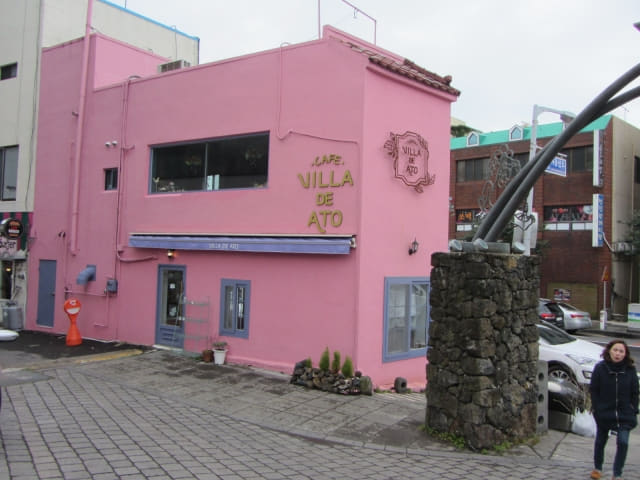
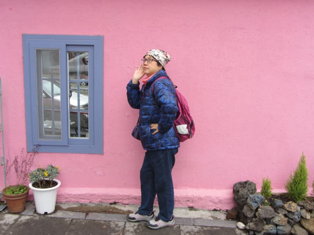
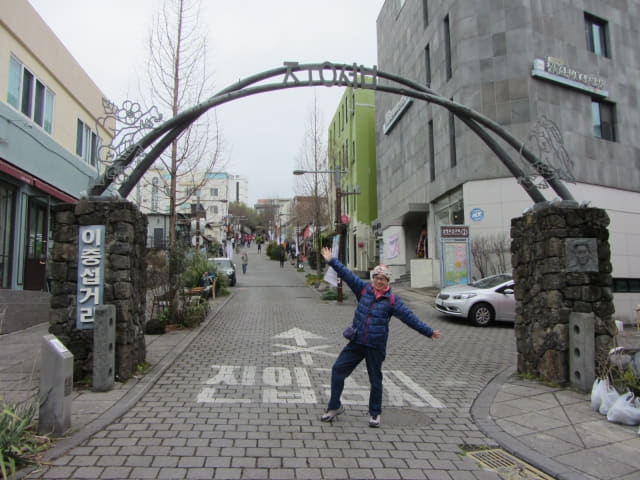
李仲燮路牌樓馬路對面有一個巨型弓箭雕像, 看清楚, 是愛神丘彼特!
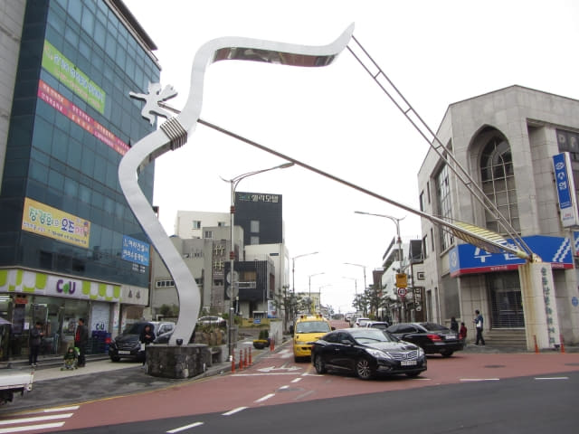
穿過愛神丘彼特雕像, 繼續往前走, 又來到偶來6號小路的其中一段。
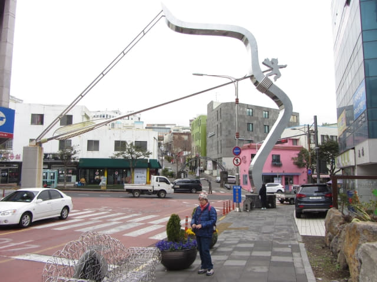
街道上有很多立體圖畫, 生動有趣, 和麗水 AquaPlanet 內的 Alive Museum 的差不多, 只是這裡是免費的!
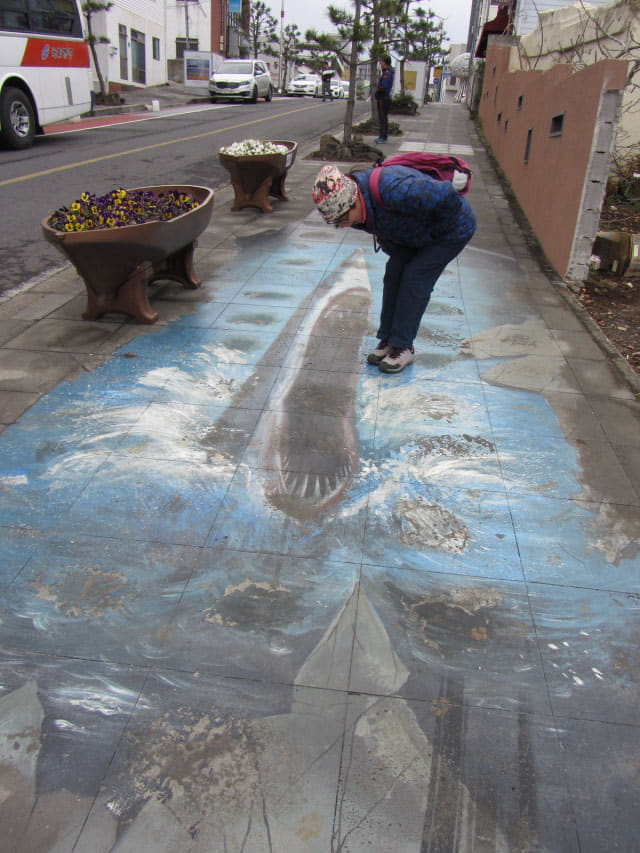
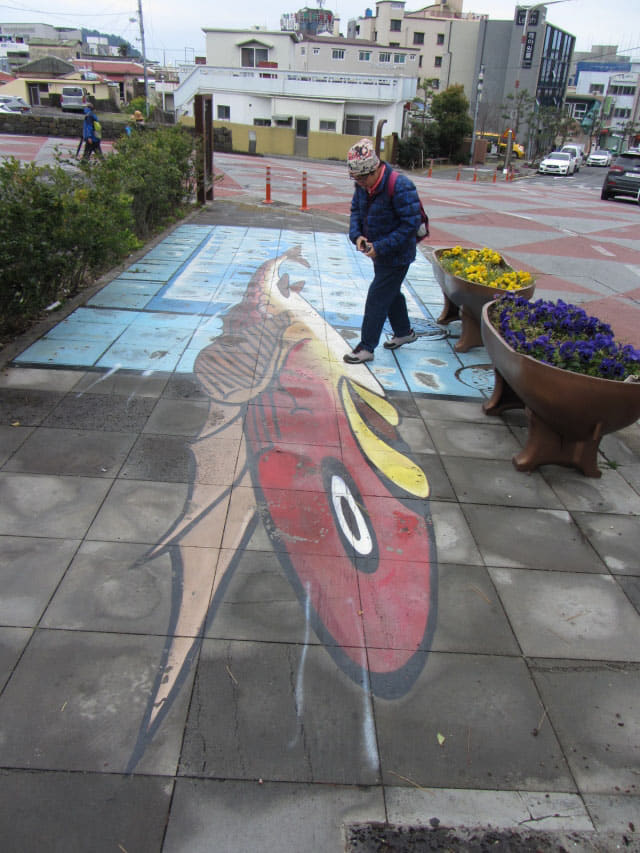
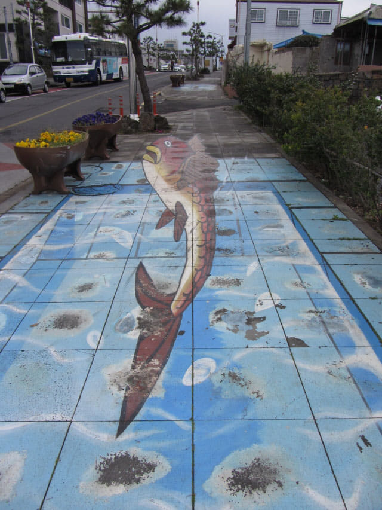
沿偶來6號小路朝海邊的方向走。
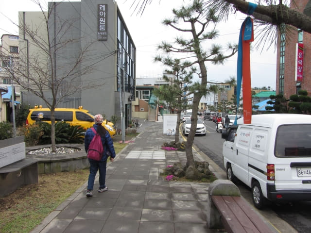
終於看見往天地淵瀑布的標示, 離這裡只300米, 總算沒有走錯路, 便循右邊那小路走去。
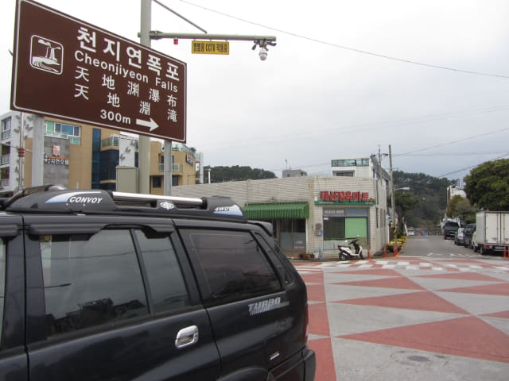
沿小路只走一會, 又有往天地淵瀑布的標示, 離這裡只250米, 快到了。
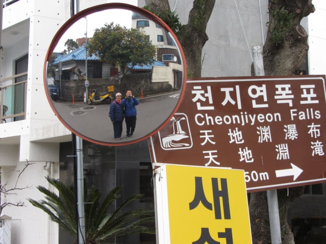
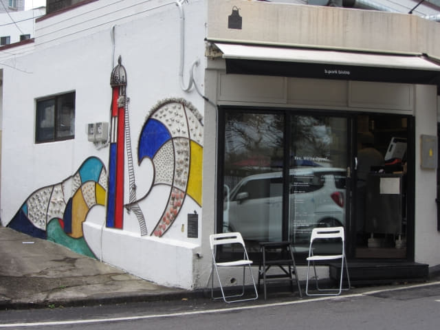
走到小路的盡頭, 路口豎起了巨型的天地淵瀑布路標, 由白色汪汪看守著。按路標所示, 轉右走便是了!
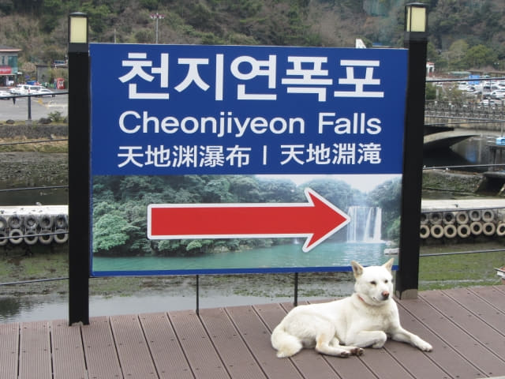
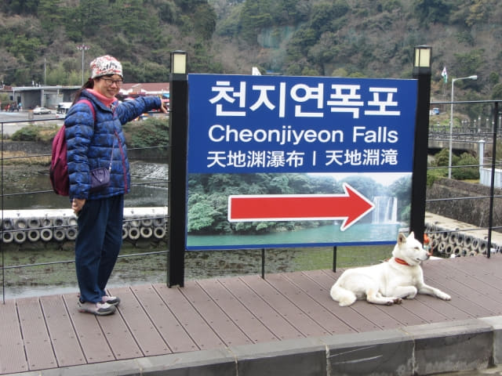
望望下面, 是一條寬闊的河道, 右邊有一條橋, 橋的對岸是一個面積很大的停車場, 那裡肯定是天地淵瀑布! 路線比估計的容易和簡單!
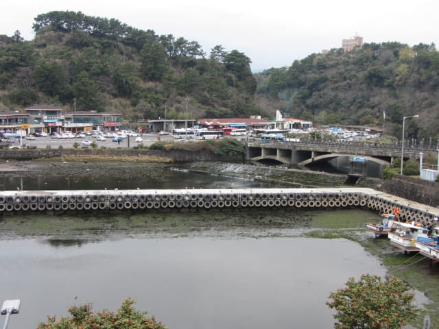
接著轉右循彎曲坡道走下。這個彎很急, 危險路牌也給經過車輛切去一角。
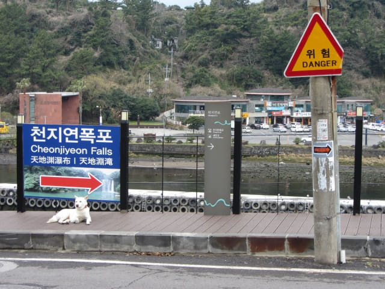
坡道中有一條名叫 Taepyeong Road (태평로) 的分叉路, 十分優美, 便順道走上去看看。
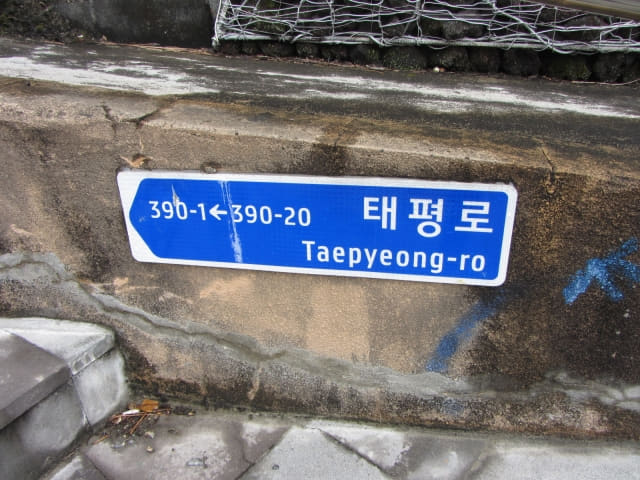
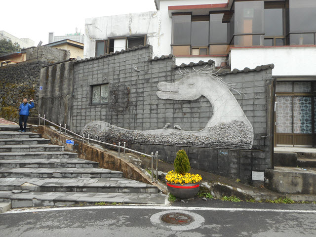
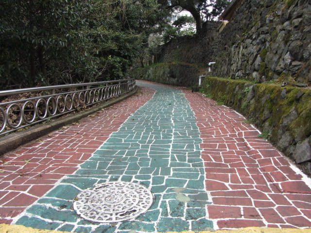
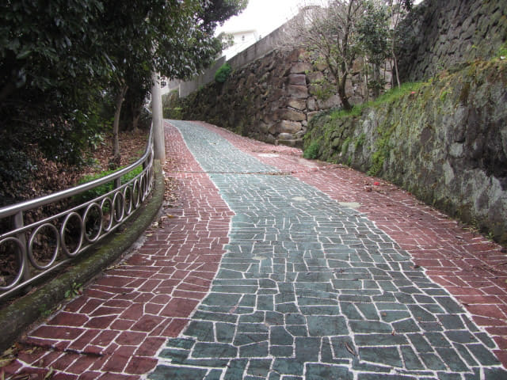
七十里橋 (칠십리교)
參觀完優美的 Taepyeong Road, 繼續沿坡道往下走, 向左拐個彎, 便來到橫躺淵外川 (연외천)兩岸的七十里橋 (칠십리교)。天地淵瀑布就在橋的對岸。